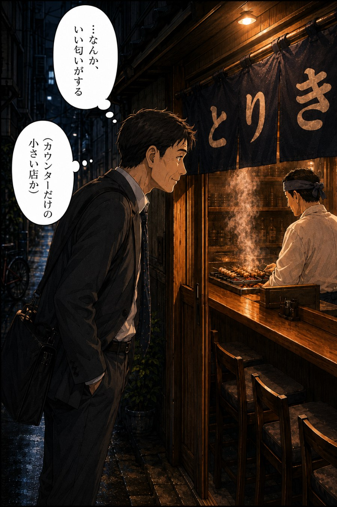
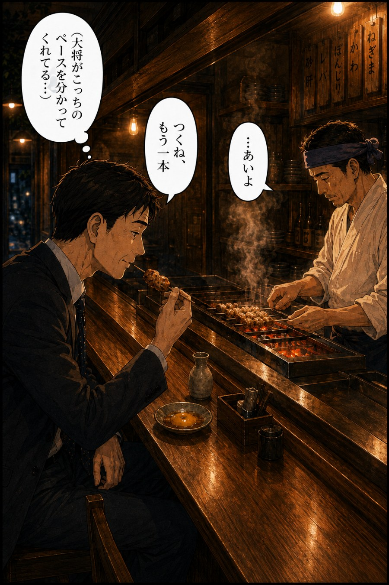
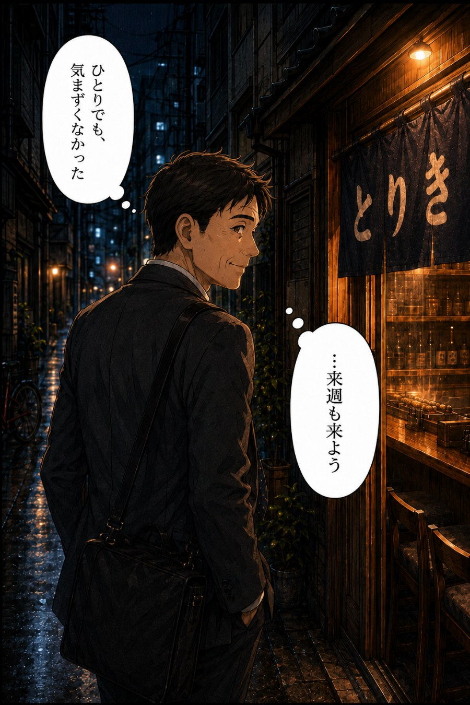

炭火焼鳥 とりき
騒がしくない。気まずくない。
大将は、こっちのペースを分かってくれてる。
カウンター8席、朝引きの地鶏、備長炭。
MASTER
大将（40代）
白い作業着と手ぬぐい
都内の老舗で修業し、この街に店を構えた。
寡黙だが、面倒見がいい。
「顔を覚えていたいから、カウンター8席にした」——それだけを言う。
COMIC



REASON
契約農家から、朝引きの地鶏だけを毎日仕入れる
「新鮮ならいい」では終わらない。契約農家との関係があるから、毎朝その日の分だけが届く。冷凍も、前日仕込みの在庫もない。
備長炭で、一本ずつ焼き加減を見ながら焼く
タイマーも温度計も頼らない。目と手と経験で、一本ずつ向き合う。都内の老舗で積み上げた時間が、この炭火の前に立っている。
カウンター8席。顔を覚えていたいから、それだけにした
席を増やせば売上は上がる。それでも8席を選んだのは「顔を覚えていたいから」。一人で来ても、急かされることはない。
VOICE
ひとりでも気まずくない。大将がこっちのペースを分かってくれてる。
— お客さんによく言われる言葉
ひとり飲みデビューがこの店だった。今は週一で通っている。
— 常連のお客さん
今夜、仕事帰りに寄ってみませんか。
一人でも、予約なしでも、ご相談ください。
お電話またはご来店にてお気軽にどうぞ。
一人客大歓迎です。